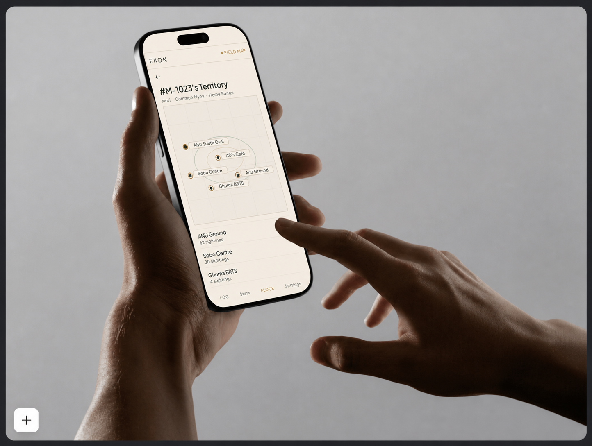

Most birding apps tell you what species you saw. EKON tells you which individual bird — a non-invasive, ML-powered mobile platform that gives every Common Myna a unique digital identity, tracked across time and location.

EKON (एक-ON, meaning "one" in Hindi) is a mobile application that uses a multi-model ML pipeline to identify individual birds — not just species — through photographs. The pilot species is the Common Myna, one of India's most widespread urban birds.
The project was designed as my B.Des capstone thesis at Anant National University, sitting at the intersection of conservation technology, citizen science, and human-centred design.
Traditional individual identification methods — leg rings, wing tags, GPS transmitters — cost Rs. 4-5 lakhs per bird, require handling, and are impossible to deploy at scale with volunteer networks.
Meanwhile, millions of citizen science observations are collected every year with zero capacity to answer the most ecologically meaningful question: is this the same bird I saw last week?
I conducted 12 semi-structured interviews across three user groups: casual birders, active citizen scientists, and professional field researchers. I also reviewed 30+ academic papers on bird biometrics, wildlife tracking, and ML-based individual recognition.
Research revealed four meaningfully different user types with different goals, contexts, and expectations. Rather than one generic flow, I designed four modes within a single app — each with its own information architecture and interaction patterns.
Individual recognition is not one problem. It requires species confirmation, feature detection, fingerprint extraction, and identity matching — each a separate model optimised for its task.
Confidence threshold design: matches above 80% auto-save. Below 80%, the app surfaces which features were used (eye weight 40%, plumage 35%, legs 20%, beak 5%) and asks the user to confirm — building trust through transparency.
The core design challenge wasn't the UI — it was making ML decisions feel trustworthy. Every match shows the user which features were used and with what weight. The system acts first; the user corrects only when needed.
Submitted as B.Des capstone thesis, May 2026. Mentored by Prof. Prayas Abhinav, Anant National University.